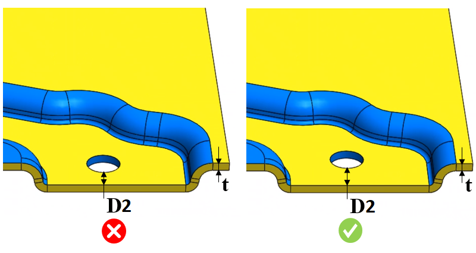

穴と部品エッジ間距離と板厚の比率は、ユーザーが指定した値の範囲内である必要があります。
変形や破れを防ぐため、穴は部品エッジから十分に離れて配置する必要があります。一般的な設計指針として、穴と部品エッジ間の最小距離は、板厚の少なくとも 2 倍とする必要があります。
一般的な設計指針として、穴と部品エッジとの最小距離は、板厚の少なくとも 2 倍とすることが推奨されます。
ユーザーは Materials Database から加工材料を設定し、対応する穴と部品エッジ間距離と板厚の比率を構成できます。DFX は、穴から部品エッジまでの最小距離（点と点の最小距離）を特定し、この距離を事前に構成された板厚比率の値と比較します。必要に応じて、デフォルトで構成されている値を編集することも可能です。
ルール UI では、材料の一覧が Materials Database から読み込まれます。ユーザーは材料およびそれに関連する値を構成できます。材料グループ内では、材料グレードはアルファベット順に並べ替えられます。材料グループが選択されている場合、DFMPro は材料グループ全体で一貫した比率を維持したまま解析を実行します。

ここでは、
D2 = 穴と曲げエッジ間の最小距離
t = 板金の板厚
注記：
穴と部品エッジ間の点と点の距離計算が行われます。
単純穴（Simple Hole）のみがサポートされています。
穴が複数のエッジ近傍に存在する場合、ルールは最小距離の値を用いた 1 つの違反インスタンスのみを表示します。